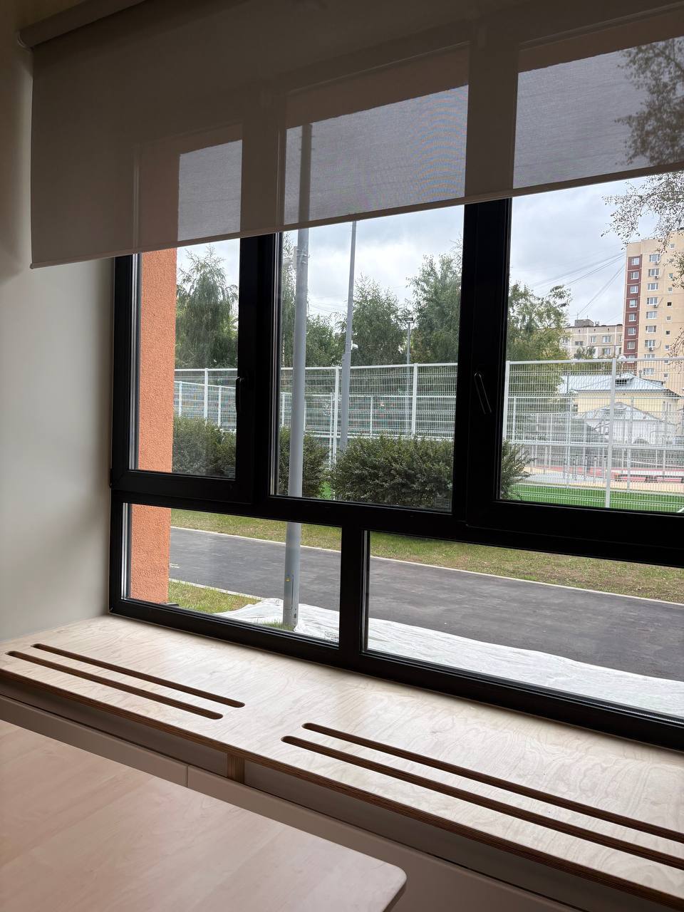
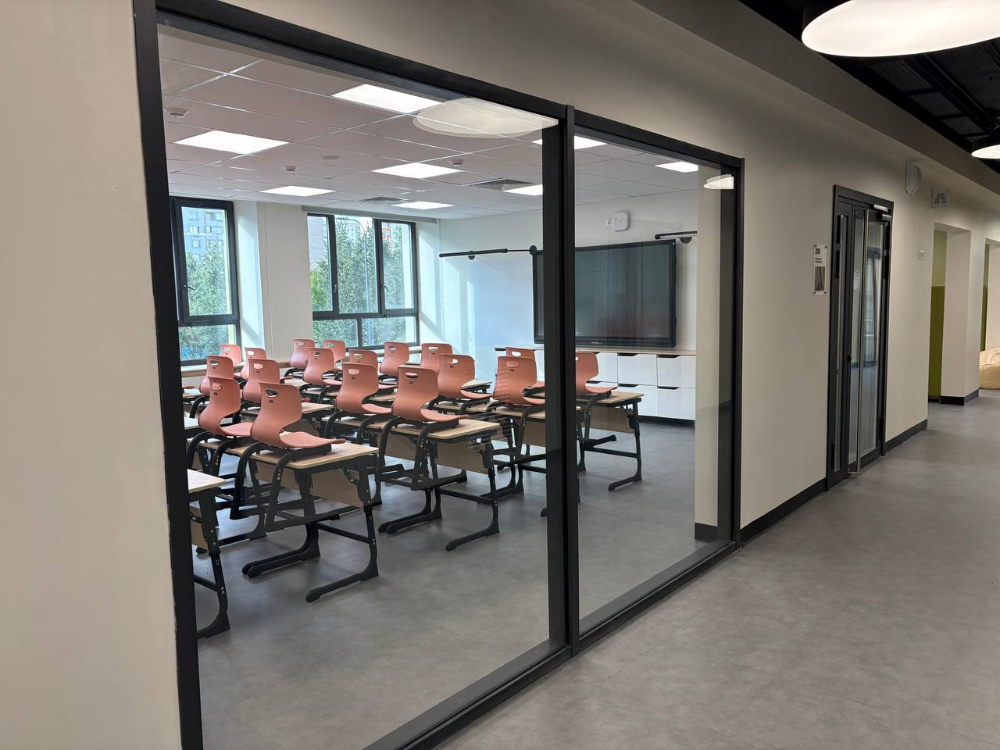
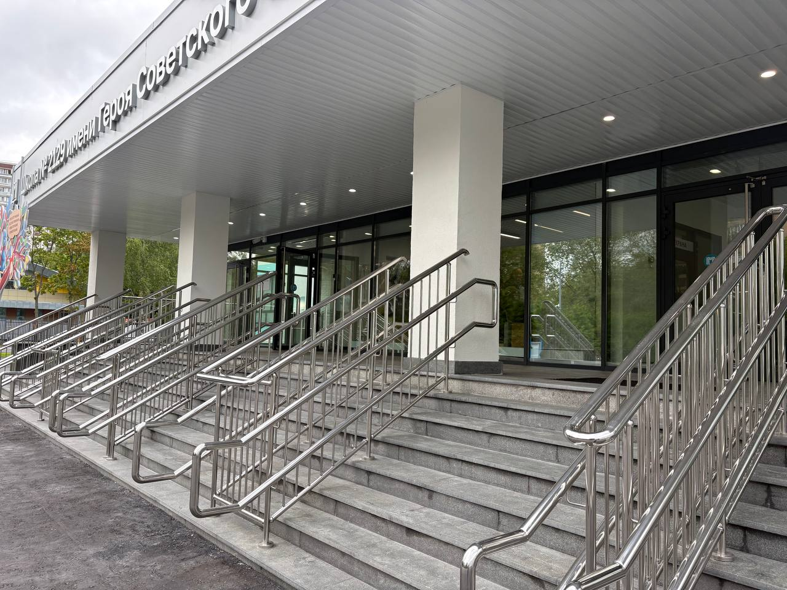
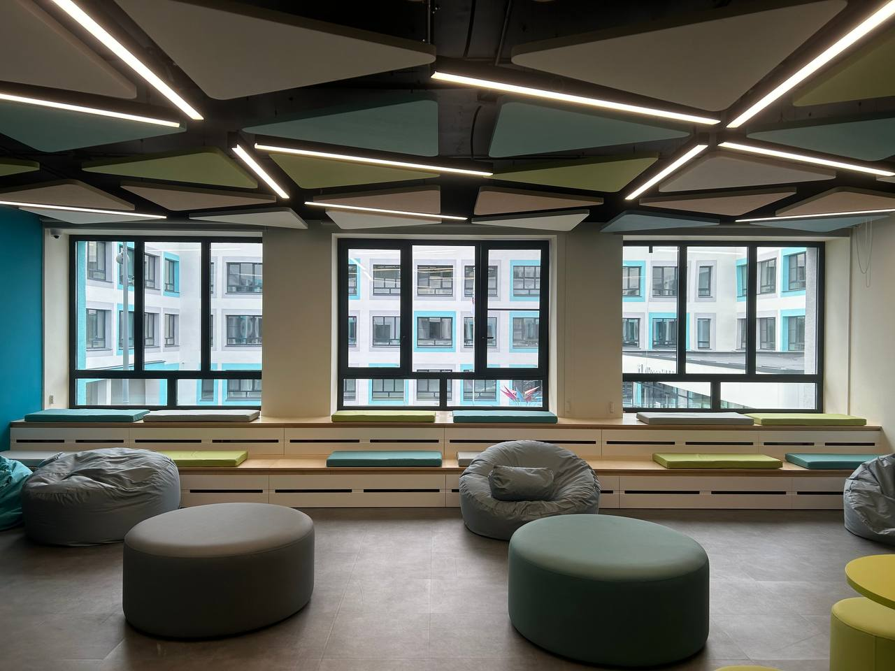

01
Окна и
остекление
ПВХ- и алюминиевые конструкции для классов, коридоров, спортзалов, фасадов и общественных зон.
ИзготовлениеПоставкаМонтаж

Подбираем состав работ под проектную документацию, сроки и условия конкретной площадки.
ПВХ- и алюминиевые конструкции для классов, коридоров, спортзалов, фасадов и общественных зон.

Алюминиевые, противопожарные и технические двери для интенсивной эксплуатации.

Поручни, ограждения и пандусы для безопасного и понятного маршрута к зданию.

Решения под нестандартный проём, техническое задание и требования конкретного объекта.
